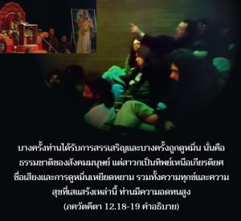
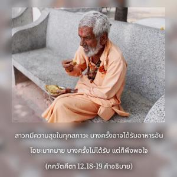

ผู้ที่เสมอภาคทั้งกับเพื่อนและศัตรู ผู้ที่เป็นกลางเมื่อได้รับเกียรติและเสียเกียรติ ทั้งในความร้อนและความเย็น ความสุขและความทุกข์ ได้รับชื่อเสียงและหมิ่นประมาท ผู้ที่มีอิสระจากการคบหาสมาคมที่เป็นมลทิน นิ่งสงบเสมอ และพึงพอใจต่อทุกสิ่ง ผู้ที่ไม่ห่วงใยกับที่พักอาศัย ตั้งมั่นอยู่ในความรู้ และเป็นผู้ที่ปฏิบัติในการอุทิศตนเสียสละรับใช้ บุคคลเช่นนี้เป็นที่รักยิ่งของข้า


สาวกเป็นอิสระจากการคบเพื่อนไม่ดีทั้งหลาย บางครั้งท่านได้รับการสรรเสริญ และบางครั้งถูกดูหมิ่น นั่นคือธรรมชาติของสังคมมนุษย์ แต่สาวกเป็นทิพย์เหนือเกียรติยศชื่อเสียง และการดูหมิ่นเหยียดหยาม รวมทั้งความทุกข์ และความสุขที่เสแสร้งเหล่านี้ ท่านมีความอดทนสูง ไม่พูดสิ่งใดนอกจากเรื่องราวที่เกี่ยวกับองค์กฺฤษฺณ จึงได้ชื่อว่าเป็นผู้มีความสงบนิ่ง สงบนิ่งไม่ได้หมายความว่าไม่พูดเลย แต่สงบนิ่งหมายความว่าไม่ควรพูดสิ่งที่ไร้สาระ ควรพูดเฉพาะเนื้อหาสาระสำคัญเท่านั้น และการพูดเนื้อหาสาระสำคัญที่สุดของสาวก คือ พูดเพื่อประโยชน์ขององค์ภควานฺ สาวกมีความสุขในทุกสถานการณ์ บางครั้งเขาอาจได้รับอาหารที่น่ารับประทานมากมาย บางครั้งก็อาจไม่ได้รับแต่ก็พึงพอใจ และไม่เป็นห่วงกับสิ่งเอื้ออำนวยที่อยู่อาศัย บางครั้งท่านอาจนอนใต้ต้นไม้ และบางครั้งท่านอาจนอนในอาคารที่หรูหรา ทั้งสองสิ่งนี้ไม่ทำให้ท่านหลงใหล ท่านมีความมั่นคง เพราะว่าแน่วแน่ในความมุ่งมั่น และความรู้ เราอาจพบว่าได้กล่าวถึงคุณลักษณะของสาวกหลายครั้ง แต่เพื่อเน้นความจริงที่ว่าสาวกต้องมีคุณลักษณะทั้งหลายเหล่านี้ หากปราศจากซึ่งคุณลักษณะที่ดีเหล่านี้ เราก็จะไม่สามารถเป็นสาวกผู้บริสุทธิ์ได้ หราวฺ อภกฺตสฺย กุโต มหทฺ-คุณาห์ ผู้ไม่ใช่สาวกจะไม่มีคุณสมบัติที่ดี ผู้ปรารถนาให้คนจำได้ว่าเป็นสาวก ควรพัฒนาคุณสมบัติที่ดี แน่นอนว่าเราไม่ต้องพยายามเป็นพิเศษเพื่อให้มีคุณสมบัติเหล่านี้ หากเราปฏิบัติกฺฤษฺณจิตสำนึก และอุทิศตนเสียสละรับใช้คุณสมบัติที่ดีเหล่านี้ก็จะพัฒนาขึ้นมาโดยปริยาย